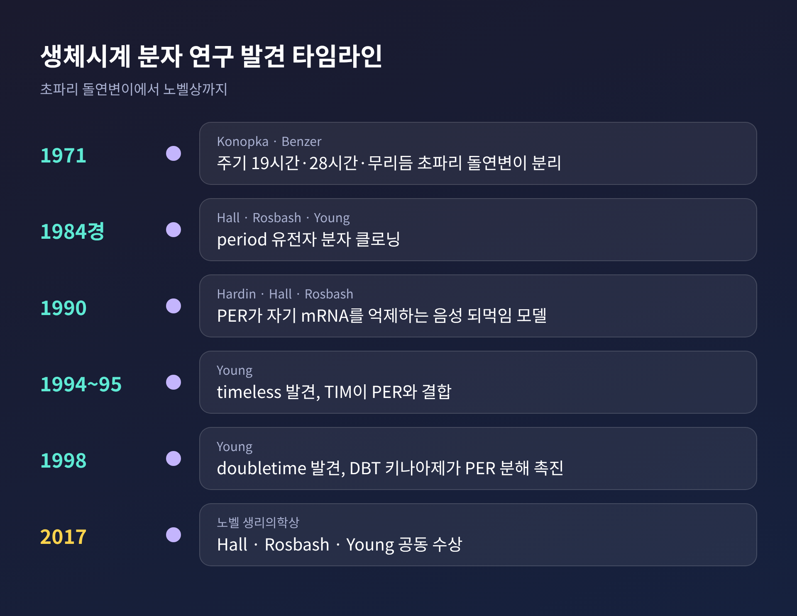
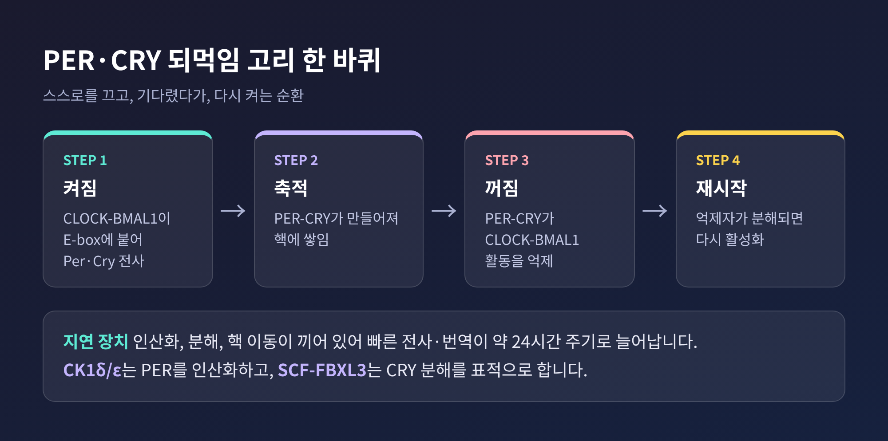
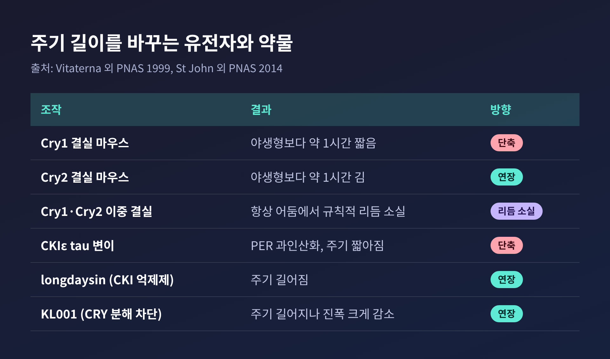
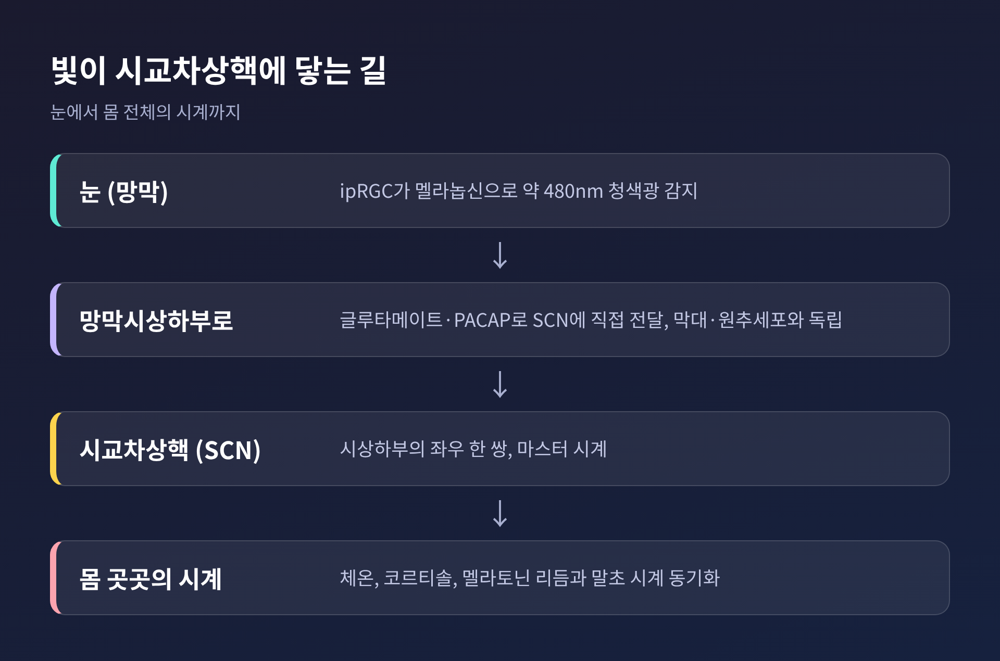
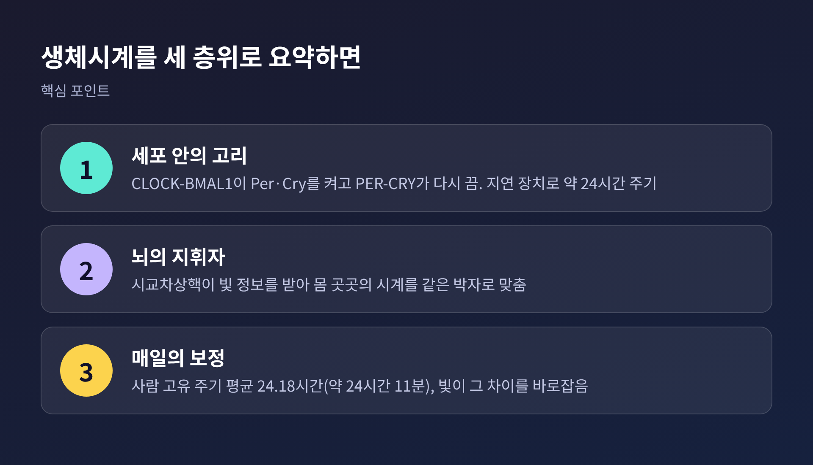

오늘은 생체시계가 어떻게 약 24시간의 리듬을 스스로 만들어 내는지 정리해 보려 합니다.
결론부터 말씀드리면, 세포 안에서는 PER와 CRY 단백질이 자기 유전자를 스스로 억제하는 되먹임 고리가 돌고, 뇌의 시교차상핵이 그 수많은 시계를 하나의 박자로 묶습니다.
2017년 노벨 생리의학상이 바로 이 원리를 밝힌 연구에 돌아갔습니다.
생체시계 연구의 출발점은 초파리였습니다.
1971년 Konopka와 Benzer는 하루 리듬이 달라진 초파리 돌연변이를 분리했습니다.
리듬이 아예 없는 개체, 주기가 약 19시간인 개체, 약 28시간인 개체였습니다.
세 변이는 같은 유전자에 있는 것으로 시사되었고, 이 유전자에는 period라는 이름이 붙었습니다.
1984년경 Hall과 Rosbash, 그리고 Young이 이 유전자를 분자 수준에서 클로닝했습니다.
다만 염기서열만으로는 시계가 어떻게 돌아가는지 알 수 없었습니다.
단서는 1990년에 나왔습니다.
Hardin, Hall, Rosbash는 PER 단백질의 양이 밤에 정점을 찍고, period mRNA는 그보다 몇 시간 앞서 정점에 이른다는 점에 주목했습니다.
쌓인 PER 단백질이 자기 mRNA 생산을 누르는 구조, 곧 음성 되먹임 모델이 여기서 제안되었습니다.
이후 Young의 연구실이 timeless(1994~1995년)와 doubletime(1998년)을 차례로 찾아내며 그림을 완성해 갔습니다.
Hall, Rosbash, Young 세 사람은 2017년 노벨 생리의학상을 함께 받았습니다.

포유류의 핵심 회로는 네 단백질로 요약됩니다.
CLOCK과 BMAL1이 짝을 이뤄 DNA의 E-box라는 서열에 붙고, Per와 Cry 유전자를 켭니다.
만들어진 PER와 CRY는 서로 결합해 핵으로 들어가 CLOCK-BMAL1의 활동을 억제합니다.
자신을 만들라는 명령을 스스로 끄는 셈입니다.
억제자가 핵에서 사라지면 CLOCK-BMAL1이 다시 깨어나 하루가 새로 시작됩니다.
St John 등의 2014년 PNAS 논문은 이 과정에서 CRY를 주된 억제자로 보았습니다.
같은 논문에 따르면 PER는 CRY가 제때 핵에 쌓이는 데 필요하고, 양적으로는 제한 요인입니다.
여기서 의문이 하나 생깁니다.
전사와 번역은 본래 빠른 반응인데, 어떻게 한 바퀴가 24시간이 될까요?
노벨위원회의 설명이 이 질문에 답합니다.
인산화, 분해, 핵 이동 같은 지연 장치가 고리 곳곳에 끼어 있기 때문이라는 것입니다.

지연 장치의 정체는 꽤 구체적입니다.
카세인 키나아제 CK1δ/ε은 PER를 인산화해 분해와 핵 이동을 촉진합니다.
SCF-FBXL3라는 유비퀴틴 연결효소는 CRY를 분해 대상으로 지목합니다.
St John 등은 두 경로의 역할을 나누어 보았습니다.
CKI는 주로 PER-CRY가 핵에 쌓이는 단계를, FBXL3는 핵 안에서 억제가 얼마나 오래 지속되는지를 조절한다는 제안입니다.
약물 실험이 이 그림을 뒷받침합니다.
CKIε의 tau 변이는 PER를 과인산화해 주기를 짧게 만듭니다.
CKI 억제제 longdaysin은 주기를 늘입니다.
FBXL3 의존 CRY 분해를 막는 KL001도 주기를 늘이지만, 진동의 진폭이 크게 줄어드는 대가가 따랐습니다.
마우스의 Cry 유전자 결실 실험도 같은 방향을 가리킵니다.
Vitaterna 등의 1999년 연구에서 Cry1을 없앤 마우스는 자유진행 주기가 야생형보다 약 1시간 짧았습니다.
Cry2 결실 마우스는 약 1시간 길었습니다.
두 유전자를 모두 없앤 마우스는 항상 어둠인 환경에서 규칙적인 리듬을 잃었습니다.
다만 이 실험의 개체 수는 야생형 6마리, 이중 결실 4마리처럼 적었다는 점은 밝혀 둡니다.
보조 고리도 하나 있습니다.
CLOCK-BMAL1은 REV-ERBα와 RORα 유전자도 켭니다.
RORα는 Bmal1 전사를 올리고 REV-ERB는 내려서, Bmal1의 진동을 양쪽에서 다듬습니다.

세포마다 시계가 있다면 누군가 박자를 맞춰야 합니다.
그 역할은 시상하부의 시교차상핵(SCN)이 맡습니다.
시신경이 교차하는 지점 바로 위, 제3뇌실 양옆에 놓인 좌우 한 쌍의 작은 핵입니다.
신경세포 수는 출처마다 다릅니다.
OpenStax는 설치류 기준 약 2만 개로, 위키백과 SCN 항목은 두 핵을 합쳐 약 1만 개로 적고 있습니다.
어느 쪽이든 수만 개를 넘지 않는 작은 구조라는 점은 같습니다.
빛 정보는 망막의 특별한 세포가 전합니다.
멜라놉신을 가진 고유감광성 망막신경절세포(ipRGC)가 청색광 영역인 약 480nm 부근에서 가장 민감하게 반응하고, 망막시상하부로를 통해 SCN에 신호를 보냅니다.
이 경로는 막대세포와 원추세포와는 별개입니다.
그래서 두 세포가 퇴화한 일부 사람도 명암 주기에는 동조될 수 있다고 합니다.

SCN이 정말 중심인지는 실험으로 확인되었습니다.
SCN을 전기적으로 파괴한 햄스터는 여전히 바퀴를 달렸지만, 낮과 밤에 무작위로 달렸습니다.
반대로 몸에서 떼어 낸 SCN 절편은 수일간 전기활동과 포도당 대사의 리듬을 이어 갔습니다.
결정적인 것은 이식 실험입니다.
자유진행 주기가 20시간으로 짧아진 돌연변이 햄스터가 있었습니다. 야생형은 24시간입니다.
파괴된 숙주에 이 돌연변이의 SCN을 옮기자, 수용자의 리듬은 숙주가 아니라 공여자의 주기를 따랐습니다.
Ralph 등의 1990년 Science 논문 제목이 곧 결론입니다. 이식된 SCN이 주기를 결정한다는 것입니다.
이식 조직은 분비성 신경 인자로 리듬을 되살렸지만, 빛에 맞추는 동조까지 복원하지는 못했습니다. 그 일에는 신경 연결이 필요하기 때문입니다.
SCN 아래의 구조도 흥미롭습니다.
복외측 영역에는 VIP를 쓰는 뉴런이 있어 빛 입력을 받고, 배내측에는 AVP 뉴런이 있습니다.
두 영역의 결합에는 GABA 기전이 관여한다고 알려져 있습니다.
SCN은 이런 신호로 체온과 코르티솔, 멜라토닌의 리듬에 영향을 주며 몸 곳곳의 종속 시계를 맞춥니다.
그렇다고 모든 시계가 SCN만 따르는 것은 아닙니다.
거의 모든 세포에 자율 진동자가 있고, 섭식과 온도 주기도 말초 시계를 움직입니다.
낮 시간에만 먹이를 주면 말초 시계가 뇌의 마스터 시계와 어긋날 수 있다고 보고되어 있습니다.
예전엔 사람의 고유 주기를 약 25시간으로 추정했습니다.
지금은 약 24시간 11분이라는 값이 널리 인용됩니다.
Czeisler 등이 1999년 Science에 발표한 연구에서 고유 주기의 평균은 24.18시간이었고, 젊은 층과 고령층이 같았습니다.
24명을 약 한 달 추적하며 하루를 28시간으로 늘린 일정에서 내부 리듬을 시계 시간과 분리해 측정했습니다.
멜라토닌, 심부 체온, 코티솔 리듬을 기준으로 삼았습니다.
옛 추정치가 길었던 이유로, 한 연구자는 전등을 켜는 일상적인 행동이 시계를 건드렸을 가능성을 지적했습니다.
정리하면 우리 몸의 시계는 24시간보다 조금 길게 흐르고, 매일 빛이 그 차이를 바로잡아 줍니다.
이 글은 기초 생물학을 소개하는 것이어서, 개인의 수면이나 건강 문제에 적용하는 판단은 전문가의 몫이라는 점을 덧붙입니다.

이 글에서 확인하지 못한 부분도 있습니다.
포유류 PER 단백질이 하루 중 정확히 언제 최대가 되는지는 이번에 살핀 자료에서 확인되지 않았습니다.
사람 SCN의 정확한 신경세포 수도 마찬가지입니다.
세포 수준의 주기를 약 24.5시간으로 적은 자료와 사람 행동 수준의 24.2시간이 어떻게 이어지는지도 단정하기 어렵습니다.
정리하면 이렇습니다.
세포 안에서는 CLOCK-BMAL1이 Per와 Cry를 켜고, PER-CRY가 다시 이를 끄는 고리가 인산화와 분해의 지연을 거쳐 약 하루에 한 번 돕니다.
뇌에서는 시교차상핵이 빛 정보를 받아 이 고리들의 박자를 맞춥니다.
생체시계란 결국 "스스로를 끄고, 기다렸다가, 다시 켜는" 단백질들의 느린 왕복입니다.
하루가 24시간이 아닌 24시간 11분이라는 사실이 마음에 남는다면, 매일 아침의 빛이 그 11분을 조용히 지워 주고 있다고 생각해 보셔도 좋겠습니다.